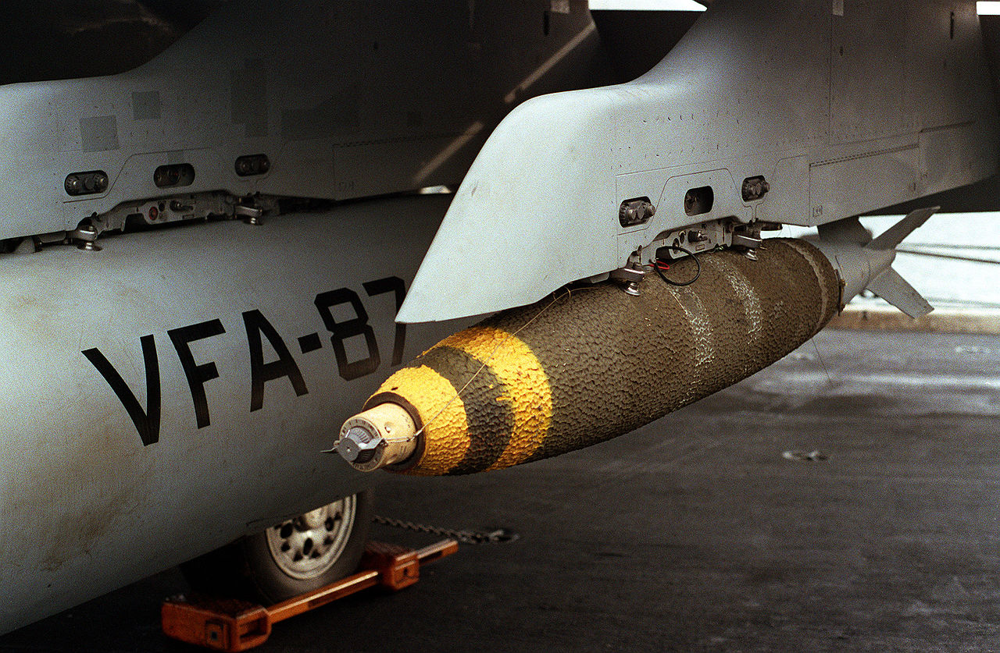
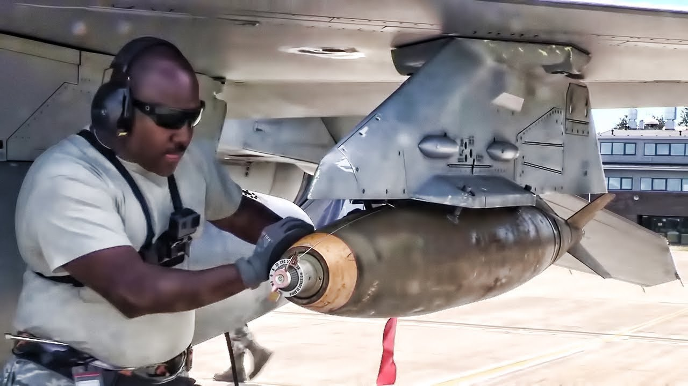
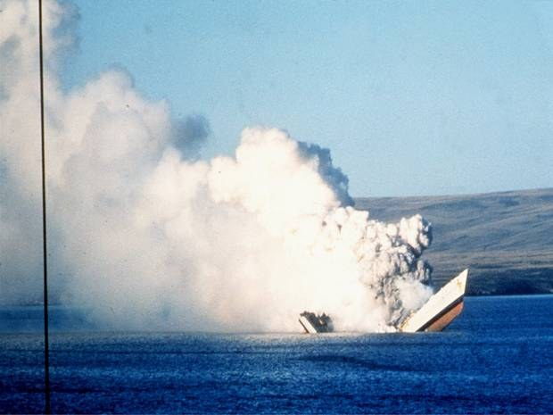
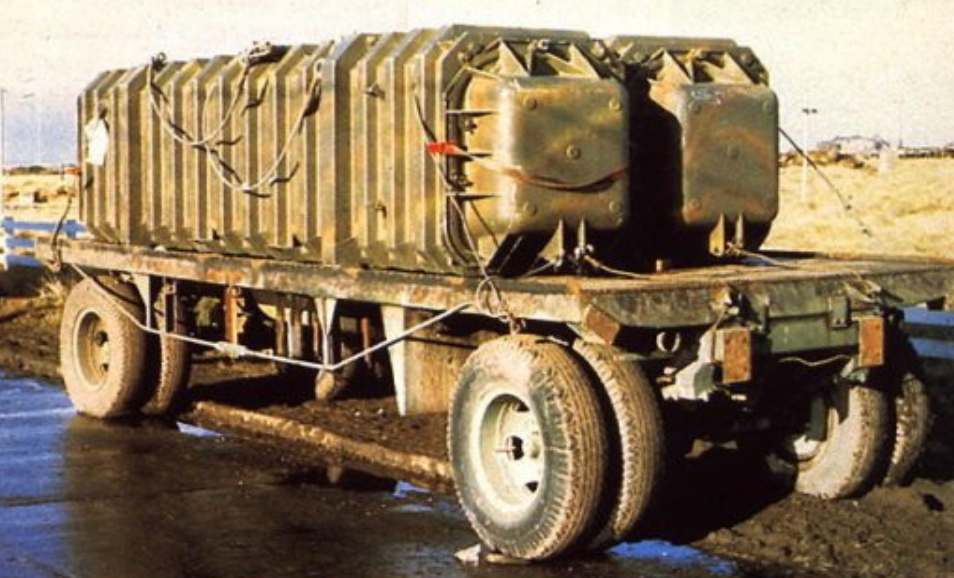
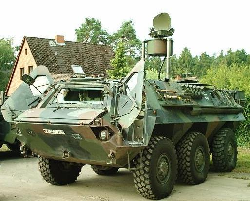
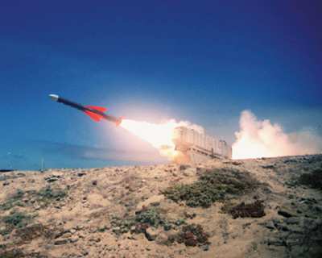
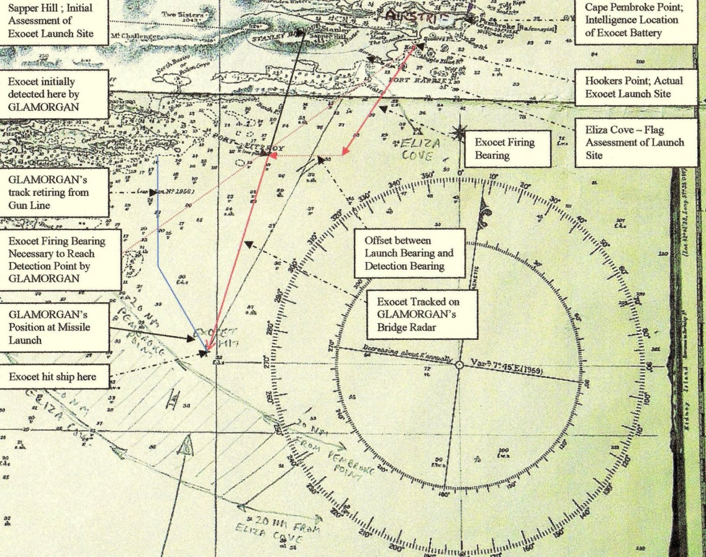
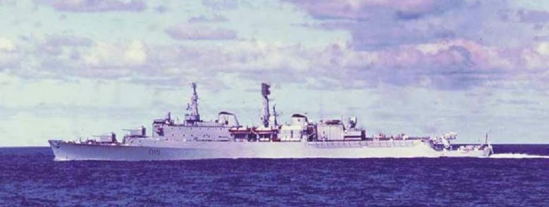
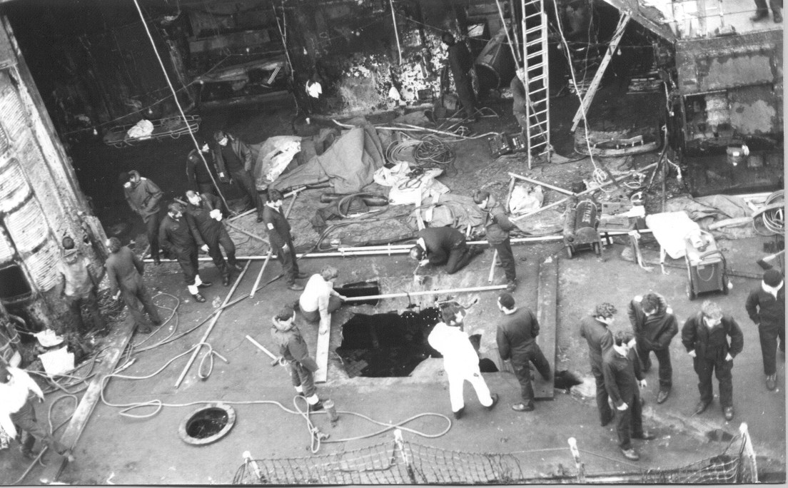
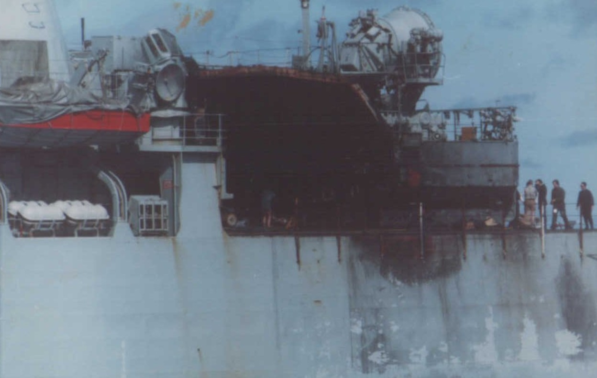

포클랜드 전쟁 잡담 (12/2)
게시: 2021-12-02T06:30:50+09:00
<작은 프로펠러를 건드리면 x되는 거에요> 사진1은 Mk-82 500파운드 폭탄. 폭탄을 전투기에 장착할 때 잘못하면 터지는 거 아닌가 겁날 수 있으나 항공 폭탄은 지상에서는 절대 터지지 않음. 심지어 오함마로 때려도 터지지 않는다고. 이유는 폭탄 맨 앞 꼭지 부분에 2개의 날이 달린 작은 프로펠러. 이건 폭탄을 떨구는 순간 돌기 시작해서 뇌관을 때리는 격침을 격발 위치로 내려보내는 장치. 즉 저 프로펠러가 먼 높이에서 낙하하면서 충분히 회전하지 않으면 절대 폭발하지 않음. 근데 전투기가 날기 시작하면 당연히 저 프로펠러가 돌지 않나? 안 돔. 이유는 저 폭탄 앞 꼭지 부분에 연결된 와이어 때문. 저 와이어 끝에 프로프렐러가 돌지 못하게 고정시키는 안전핀이 달려있음. 폭탄이 투하되어도 저 철사 와이어는 안전핀을 매단 채로 전투기 파일런(pylon)에 대롱대롱 매달린 채로 남고, 그렇게 안전핀이 떨어져 나가면 폭탄 끝의 프로펠러가 즉각 회전하며 격침을 격발 위치로 무장시킴. 어떻게 보면 굉장히 조악해보이는데 거의 100년간 써본 결과 상당히 잘 작동한다고. 끝으로 저 폭탄에 뭔가 까칠까칠한 옷이 입혀졌다는 것은 저게 공군 전투기가 아니라 해군/해병대 전투기라는 뜻. 저건 thermal isolation, 즉 단열제인데, 만에 하나 화재가 발생하여 폭탄이 불길에 싸여도 그 폭발을 최대한 늦추기 위해 만들어진 것. 저 폭탄 속에 든 장약의 종류에 따라 다르지만 2천 파운드짜리 Mk-84 폭탄의 경우 10분간 불에 구워도 안 터진다고. 그러나 1967년 USS Forrestal의 화재 사건 때는 갑판 위에서 불길에 싸여있던 폭탄이 갑자기 쪼개지며 열리는 바람에 장약이 그대로 드러나 밝은 빛을 내며 활활 타다가 결국 1분 36초만에 폭발... 똑같은 Mk-82 폭탄이라도 공군이 쓰는 것에는 저런 단열제가 도포되어 있지 않다고 (사진2). 폭탄에 불이 붙으면 빨리 도망치면 되니까. 그러나 항공모함 위에서는 어떻게든 불을 끄고 폭탄을 식혀야 함.
 
<왜 아르헨티나 폭탄은 대부분 불발탄이었나?> 앞서 말한 항공 폭탄의 뇌관을 무장시키는 작은 프로펠러의 목적은 투하된 폭탄의 폭발에 전투기가 피해를 입지 않도록 하는 것. 즉 전투기에서 투하된 이후 일정 시간이 지나기 전에는 폭탄이 터지지 않도록 안전 거리를 두는 것. 보통 최소 60m 정도 낙하해야 격침이 격발 위치로 내려옴. 1982년 포클랜드 전쟁에서 아르헨티나 해공군의 전투기들은 여러번 멍텅구리 폭탄으로 영국 구축함들에게 명중탄을 냈지만 그 중 대다수가 불발로 끝남. 이유는 바로 저 폭발 지연용 프로펠러. 당시 아르헨티나 전투기들은 영국 해군의 레이더에 걸리지 않기 위해 약 해면 위 30m의 초저공으로 침투한 뒤 폭탄을 투하했기 때문에 저 프로펠러가 충분히 회전하기 전에 군함에 명중. 폭탄이 함체에 명중하면 프로펠러는 더 이상 회전을 하지 않았고 따라서 폭발도 하지 않음. 아르헨티나 해공군은 대체 왜 이리 불발탄이 많은지 몰랐음. 영국 해군은 금방 이유를 알았음. 다만 영국 방송에 일부러 '아르헨군의 낡은 폭탄의 신관이 불량이라서 다행'이라는 식으로 인터뷰를 하며 아르헨 공군을 속였음. 그러다 전투가 본격으로 시작된지 1달이 채 안된 5월말, BBC World Service에서 아르헨 폭탄의 불발 이유를 방송. 영국군은 발칵 뒤집혀서 '기레기 놈들 때문에 영국군 장병들이 죽게 되었다' 라며 격분. 그러나 그 이후에도 전쟁이 끝날 때까지 아르헨 해공군의 폭탄은 계속 불발. 5월 24일 명중된 폭탄들도, 6월 8일에 명중된 폭탄들도 모두 불발. 아르헨군이 영어를 못했나 또는 BBC World Service를 안 보고 있었나? 명확한 설명은 없으나, 실은 뾰족한 방법이 없었을 듯. 저 프로펠러의 필요 회전수를 줄였다가는 투하한 아르헨 전투기가 손상을 입고 추락할 수도 있는 상황에서, 아무 테스트 없이 무작정 줄일 수는 없음. 아르헨 조종사들에게 60m 이상의 고도에서 투하하라고 지시를 하는 것은 가능했을텐데, 영국 해군의 Sea Dart 대공 미사일, Harrier 전투기, 그리고 온갖 대공포들에게 집중 사격을 받는 가운데 60m 상공으로 올라가서 투하하는 것을 지킬 수 있었을지 의문. 사진은 그렇게 배 한가운데 박힌 아르헨 불발탄을 제거하다가 그만 폭발하는 바람에 침몰한 HMS Antelope.

<앉은뱅이 미사일은 무쓸모> USS Hank는 1944년 진수된 Allen M. Sumner급 구축함. WW2와 한국전쟁에도 참전하여 흥남 철수를 지원. 1972년 아르헨티나로 팔려가 ARA Segui가 된 뒤에 초기 포클랜드 침공에도 참여. 영국 원정함대는 이 낡은 2200톤급 구축함도 꽤 꺼려했는데, 이유는 여기에 장착된 프랑스제 Exocet 미사일 2발 때문. 그러나 아르헨티나 해군은 이 낡은 구축함을 2척의 항모가 포함된 영국 함대 쪽으로 돌격시키는 것은 자살 행위라고 현명하게 판단하여 항구 밖으로 나가질 않음. 그러나 어차피 구축함은 엑조세 미사일을 그 사정거리인 70km 정도 적 함대 근처로 신속안전하게 배달하기 위한 도구일 뿐. 근데 영국 구축함들이 상륙 지원하느라 포클랜드 섬 근처 10km 안쪽까지 겁도 없이 다가오네? 굳이 우리가 갈 필요가 없네? 그래서 아르헨 해군은 세기 호로부터 엑조세 미사일을 떼내어 C-130 수송기로 포클랜드 섬으로 옮긴 뒤 해안 근처에 설치. 아르헨 해군은 이 발사대를 'ITB' (Instalación de Tiro Berreta, 날림 발사대)라고 부름 (Berreta : 총기 베레타가 아니라 아르헨식 스페인어 구어체로 '질이 나쁘다'라는 뜻). 바퀴달린 트레일러 위에 엑조세 발사관을 올려두고 (사진1) 옆에 아르헨 육군이 제공한 프랑스제 도플러 레이더인 RASIT (RAdar de Surveillance des InTervalles, 사진2)가 목표물 탐색을 수행. 근데 영국 해군도 바보가 아닌지라, 정찰을 통해 해안가에 이렇게 엑조세 미사일 발사대가 설치된 것을 파악하고 그 인근에는 얼씬도 하지 않음. 그래서 아르헨 해군이 '앉은뱅이 미사일은 무쓸모'라고 생각하던 중 기회가 찾아옴.
  
<날림 발사대의 업적> 전쟁이 거의 끝나가던 6월 12일 토요일 새벽, 밤새도록 '두 자매 능선 전투'를 벌이던 영국 해병 45 Commando 부대를 4.5인치 함포 사격으로 지원하느라 해안선에 바싹 붙어있던 구축함 HMS Glamorgan이, 날이 밝기 전에 서둘러 항모 전단 호위 임무로 복귀해야 하는 상황이 발생. 원래는 해가 뜨기 훨씬 전에 복귀했어야 하는데 생각보다 전투가 길어져서 늦어진 것. 날이 밝으면 또 아르헨 공군의 Skyhawk 공격기들이 영국 항모를 잡겠다고 날아올 수 있으므로 서둘러야 했음. 그래서 글램모건은 약간 위험하더라도 엑조세 발사대가 설치된 곶 인근을 쾌속으로 가로질러 가기로 함. 계산에 따르면 해안으로 뻗어나온 곶 등의 지형으로 인해 대부분의 항로는 엑조세 발사대로부터 가려져 있었고, 그렇게 가려진 곳을 벗어나 탁 트인 바다로 나갔을 때는 레이더 사정권에서 아슬아슬하게 벗어난 위치라고 생각했기 떄문. 그런데 영국군 정보부가 준 정보가 제대로 된 것일 리가 없음. 발사대의 실제 위치는 알려진 것보다 약 12km 더 가까웠고, 결정적으로 뻗어나온 곶으로 가려진 해역이 글램모건이 생각한 것보다 좁았음. 덕분에 탐지거리 40km 정도인 RASIT 레이더가 글램모건을 발견. 글램모건이 해안에서 약 33km 떨어진 곳을 20노트 속력으로 달리고 있을 때 아르헨 엑조세 요원들이 1차 발사. 그러나 아르헨군이 하는 일이 다 그렇지 뭐. 발사가 안 됨. 다시 쏨. 발사는 되었는데 엑조세가 목표물을 못 찾고 엉뚱한 곳으로 날아감. 굴하지 않고 남은 마지막 1발을 다시 발사. 이것이 목표물인 글램모건을 제대로 찾음. 글램모건의 고물 부분을 강타. 14명 사망하고 다수 부상. ** 아래 그림은 영국 해군이 전후에 파악한 엑조세 피격 상황. 당시 영국 측은 맨 오른쪽 상단의 Cape Pembroke Point에 엑조세 발사대가 있는 것으로 파악했으나, 실제로는 그 왼쪽의 Hookers Point에 있었다고. 그러나 영국 해군은 피격 직후에는 엑조세 미사일이 발사된 곳은 실제보다 더 왼쪽인 Eliza Cove였던 것으로 판단. 정작 글램모건의 레이더에 따르면 엑조세는 훨씬 왼쪽인 Sapper Hill에서 발사된 것임 (빨간색 선). 레이더가 거짓말을 할 것 같지는 않은데 이게 대체 어떻게 된 것일까? 아! 레이더도 영국제구나! 영국제 물건이 다 그렇죠 뭐.

<대함 미사일에 얻어맞을 때의 요령> 엑조세에 피격되기 10초 전, HMS Glamorgan은 레이더에서 희미한 감지 신호만 감지. 이건 그냥 glitch라고 넘어갈 수도 있었으나 당시 함교에서 당직을 서고 있던 장교 Ian Inskip은 그냥 '감으로' 저게 엑조세 미사일이라고 판단하여 작전실에 경보를 전달하고 우현으로 급회전. 이는 당시 미리 훈련된 미사일 피격시의 대응 조치에 따른 것. WW2 당시 어뢰 공격을 받을 때와 마찬가지로, 미사일 공격을 받을 경우 전속력으로 선회하여 미사일에게 자신의 엉덩이, 즉 고물 부분을 들이대는 것이 원칙. 이유는 세 가지인데 (1) 날아오는 미사일에게 최소한의 면적만을 노출시켜 빗나가길 기대 (2) 측면으로 얻어맞을 때 재수없이 탄약고나 CIC 등 주요 부위를 얻어맞는 것을 회피 (3) 이물보다는 고물에 구멍이 뚫리는 편이 군함의 침몰 가능성이 낮기 때문 실제로 글램모건은 급선회한 덕분에 탄약고나 CIC 등의 주요 부위는 무사했음. 선회하지 않았다면 Sea Slug 미사일 탄약고까지 피격되었을 가능성도 있었음. 그러나 엑조세 미사일은 폭발하여 갑판에 큰 구멍을 뚫은 (사진2) 뒤에도 남은 미사일 동체가 고물 쪽의 헬기 격납고 문을 부수고 날아들어 거기에 있던 Wessex 헬리콥터에 명중. 하필 (또는 필연적으로) 이 헬기에는 연료가 가득. 이 헬기의 폭발과 화재가 가장 큰 인명 피해를 냈다고. 전사자 14명 중 6명이 이 헬기의 정비 요원들. 그러나 글램모건은 피격된지 약 3시간 만에 화재를 진압하고 자력으로 항행 시작. 비록 포클랜드 전쟁에 전투 임무를 더 수행하지는 못했지만 엑조세 미사일에 피격되고도 살아남은 유일한 함정으로 기록됨. 글램모건은 1986년 퇴역하여 칠레 해군에 팔려갔다가 거기서도 1998년 퇴역. 2005년 해체장으로 끌려가다 사고로 남태평양 칠레 앞바다에 침몰됨.
  